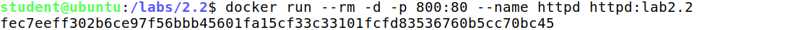
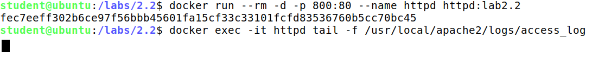
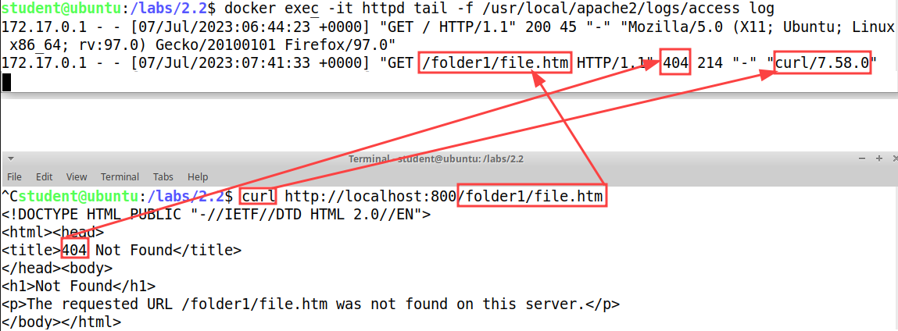
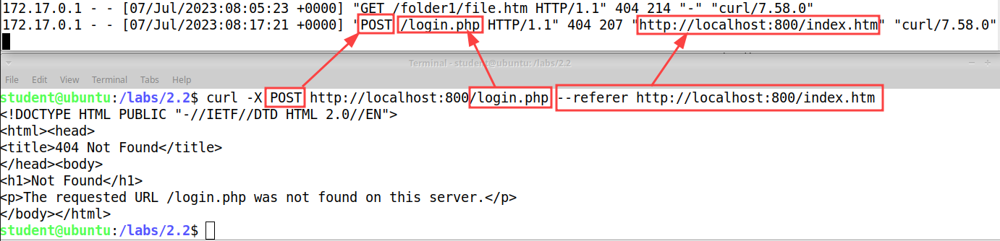
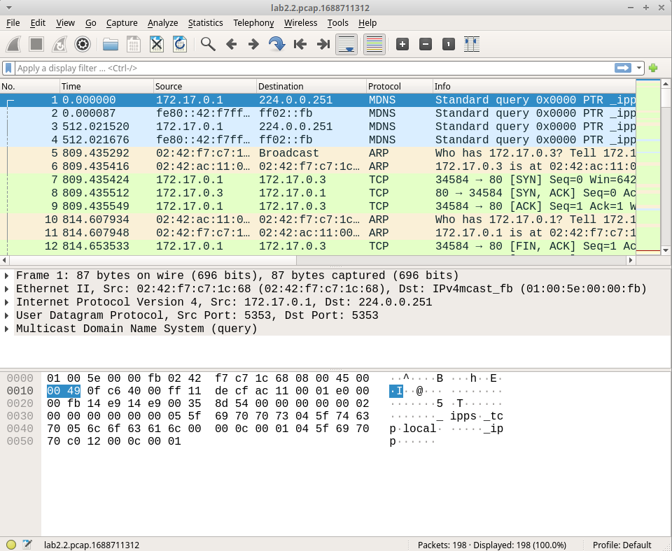
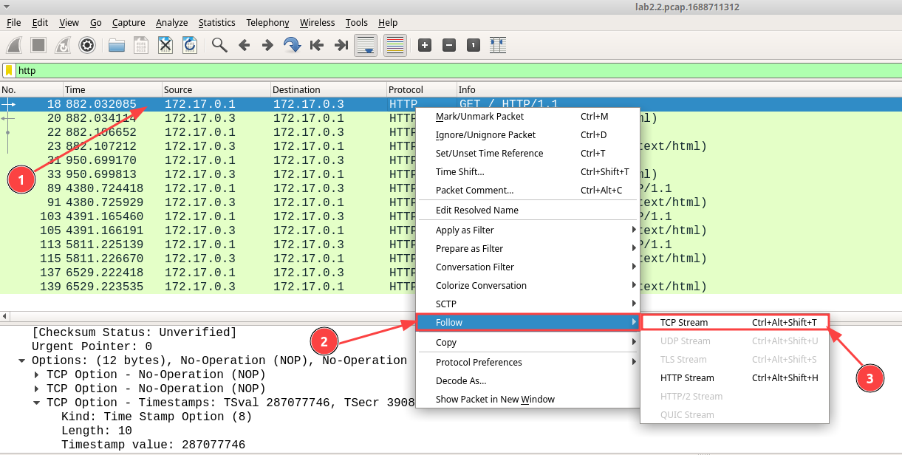
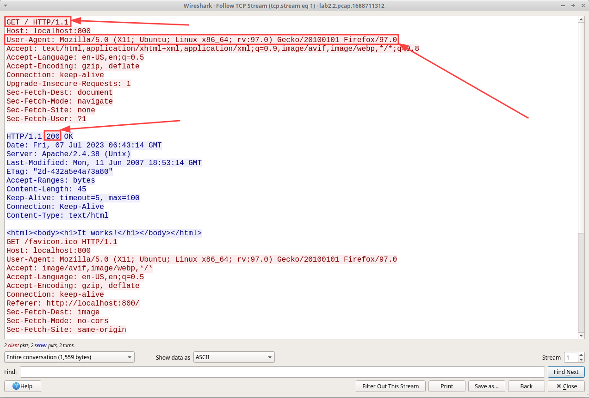
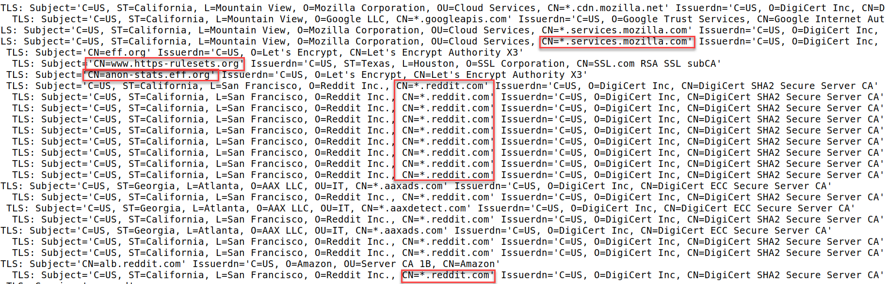
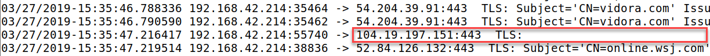
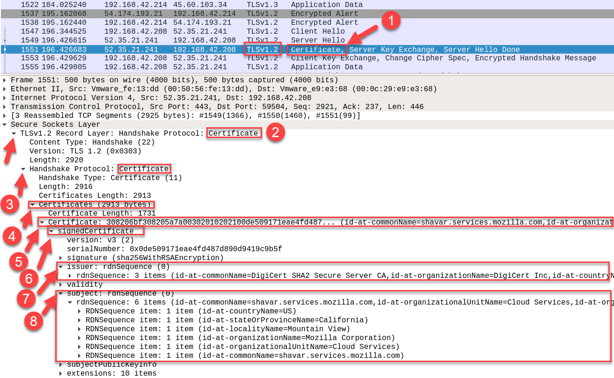

HTTP and HTTPS Analysis
Objective
• Understand multiple ways HTTP logs are generated
• See the difference in content between network extracted and server written HTTP logs
• Analyze the full content of HTTP transactions in Wireshark
• Extract certificate information from HTTPS traffic
• Analyze HTTPS connection details in Wireshark
In order to start Suricata to network traffic anlysis you use:
sudo suricata -c /labs/2.2/suricata.yaml -S /dev/null -i docker0 -D
-c /labs/2.2/suricata.yaml: specifies where are the logs saved to
-S /dev/null: Disables the Suricata signature-based detection engine by redirecting the rules to /dev/null, effectively discarding them. This option is useful when you only want to use Suricata for network traffic analysis without detection.
-i docker0: Specifies the network interface (docker0) that Suricata should monitor for network traffic.
-D: Runs Suricata in the background as a Daemon
1. Start a web server and observe how it logs transactions
In this step we'll start up a docker container running the Apache web server and interact with it in the browser. As we type different URLs into the Firefox bar we'll simultaneously be watching the logs being produced by the server. This will benefit us by giving a sense for the format and fields that are present in HTTP logs collected from the average web server.
Run the following command on the command line to start the Apache web server:
docker run --rm -d -p 800:80 --name httpd httpd:lab2.2
This should return a long string that looks like a hash and give you back a command line. This is the sign the Apache docker container has started.

Next we'll run a second command that will attach to the container and print any logs generated by the web server.
docker exec -it httpd tail -f /usr/local/apache2/logs/access_log
This command will wait for incoming interaction to the web server and print out the contents that would normally be written to the access.log file. In many production web server deployments, this is the file that you would be collecting and ingesting into your SIEM.

Let's generate some traffic to the web server and see how it is recorded on the command line. Note that we are running the web server on a non-traditional port (800) instead of 80 to avoid colliding with other services. So in order to create traffic we can just go to that port http://localhost:800/
{kind=link}
Switch back to your terminal, you should now see a log (maybe two) has appeared! (You may need to hit refresh in the browser a couple times if you do not see a log at first.)

This screenshot shows the fields present in an Apache log by default, note that some fields were not present and are therefore represented as a "-". There's one record for loading the page, and a potential second log line for loading the favicon for the page (which does not exist, and therefore a 404 is returned). Here's an explanation of each field.
Client IP - The IP address that made the request to the server. As a server admin or security analyst reading the logs, this is how you know where the request came from.
Date/Time - The timestamp for the event, with the timezone included (although it is not set in this case due to the way we started the server). Not all web server logs come with timezones in the timestamps, which can make incident response painful.
Request - This is one of the most important pieces of the log. First is the HTTP method that was used, followed by the path that was requested (/ in this case, since we went to the root of the site, this is represented by the / after the :800 in http://localhost:800/). The final component is the version of HTTP that is being used by the user's browser - HTTP/1.1 in this case.
Response Code - What was the response from the server returned to the user? In this case it was a "200". Meaning it was a succesfull connection between client and server.
User-Agent - This field tells us what the client the user is connecting with claims to be. Note that this isn't necessarily the truth, but unless it is a malicious program making the request, it generally will be truthful. In this print the User Agent are:
"Mozilla/5.0 (X11; Ubuntu; Linux x86_64; rv:97.0) Gecko/20100101 Firefox/97.0"
AND
"Mozilla/5.0 (X11; Ubuntu; Linux x86_64; rv:97.0) Gecko/20100101 Firefox/97.0"
Next let's manipulate some of the parameters in this log. Open a new terminal so that we can make some manual web requests using curl.
Curl is a tool to make arbitrary web requests from the Linux command line. It will help us easily manipulate the fields and parameters we are sending in our web request.
Enter the following command into the command line on the new terminal:
curl http://localhost:800/folder1/file.htm
You should now be able to see the correlation between the request we made on the way the server recorded it. Here's a picture of how our command line request translates into the log that is written by the server.

You can see how the URL requested is now reflected in the server log, as well as the "404" response code. You can also see that the curl command line tool uses "curl/7.58.0" as the User-Agent.
What if we want to send a POST request instead of a GET request? A GET request was sent from curl because that is the default but, you can specify to use the POST method instead.
Type the following command on the command line to produce a POST request to the web server.
curl -X POST http://localhost:800/login.php --referer http://localhost:800/index.htm
You should now see the following server log written. Here's how it corresponds to our entry.

The POST method is now recorded in the method field, our new URL (login.php) is in the path, and we now have a referer - a field we didn't have before. The referer is the page that the user's web browser will send the server so it has the context of which page the user was on previously. In this case we manually set it to say it was from http://localhost:800/index.htm. This is the type of log you might see if the main page was called index.htm and contained a login box that would POST credentials to a script file on the server called login.php. Of course none of these URLs exist and are returning 404 error's but that won't matter since we are just trying to see the logs.
We are now done with the Apache web server, you can close the second terminal where curl was being used. Afterward, go to the original terminal that was printing logs and press "Ctrl + c" to break out of the command. This will return you to a normal terminal prompt.
To stop the web server, type the following command.
docker stop httpd
2. View the HTTP logs produced by Suricata
Although the server gives us a great idea of what's going on, observation of the network traffic by out-of-band sensors running tools like Suricata or Zeek can give us even more information.
On the command line, run the following command to print to the screen the full JSON objects recorded from the requests that we made earlier.
cat /labs/2.2/suricata/eve.json | grep localhost:800 | jq
This command prints the full-detail data from eve.json produced by Suricata, uses grep to isolate just the requests to our Apache server, then pipes them to "jq" which makes the JSON output easier to read. You should see output that looks like the following:
{kind=link}
From this, it is clear that network extraction of data can be much more descriptive than the default fields collected from server logs. The differentiating factor however is that if the transactions are encrypted, network extraction will fail, leaving the server as the only place that can actually see the details.
The takeaway from this step is that although you can collect logs from an endpoint web server, in the case of unencrypted or decrypted traffic it may be better, and infinitely more manageable to do it centrally via the network. In the typical situation of a perimeter network or other server subnet with multiple hosts running, Suricata or Zeek would generate these logs for all incoming and outgoing traffic it could see, regardless of the server software and version, all from one out-of-band central point! This is a much better alternative than trying to maintain logging agents on each separate system, each of which need unique parsing rules.
3. View the actual HTTP requests in the PCAP recorded by Suricata
While Suricata is creating the eve.json event log, it is also recording a true PCAP of the transactions we created. Since some details will neither be logged by the server or in Suricata, there are some questions you may have that only a PCAP can answer. In this step, we'll look at the actual, full-text requests that we produced when visiting our web server.
In this lab, Suricata is set to record all output to the /labs/2.2/suricata folder, and the PCAP file will have a prefix of lab2.2.pcap.[x], where x is some number depending on when the capture started.
Find the name of your PCAP file with the command below:
ls -l /labs/2.2/suricata/lab2.2*
This will list any files that match this name pattern, there should be only one option unless you have performed the lab more than once.
{kind=link}
Open the lab2.2.pcap.[x] file with the highest number suffix. To easily do this, use the "tab-completion" features of the terminal by typing:
wireshark /labs/2.2/suricata/lab2.2.pcap
Before hitting "enter" hit the "tab" key to auto-fill the numbers at the end of the filename. If there is more than one option you'll have to hit tab twice to list the options. Once the filename is filled out then hit enter to open the PCAP in Wireshark
{kind=link}
You should now see a list of all the packets that have been recorded:

We only want to examine http, so type http into the display filter bar and press enter. Afterwards you should see the following:
{kind=link}
Now that you're only seeing HTTP traffic, let's focus in on the GET request for the root folder, the first request we made in the previous step.
Right click the line that says GET / HTTP/1.1 in the info column, then mouse over the "Follow" option, then select "TCP Stream".

This should bring up the Wireshark Follow TCP Stream window as shown below.

This view shows the exact data that was passed back and forth between your browser and the web server when we visited the default page (note you may have a '200' response code or additional headers/data compared to the screenshot, this will depend on if you have closed your browser and what services you have logged into in the past). The red text is the data sent from the browser to the server, and the blue text is the data sent back from the server to the browser. The red boxes show the data that was present in the logs, everything else is something you may only see by looking at the PCAP.
Clearly there is far more data here than is portrayed in either the server logs, or the Suricata metadata. Since malware knows this will be the case, it may be operating carefully to avoid showing up in commonly logged fields and may be difficult to identify unless you are able to look at the packets, as we've done here. Looking at lots of HTTP traffic and following the stream to read the contents like this will help teach you what is normal looking at what is odd.
Close the TCP stream window by clicking the x in the upper corner.
Go ahead and look at the other transactions if you'd like. In order to get back to the view we had before of http transactions only, you'll have to re-enter the "http" filter in the display filter bar.
Once you're done exploring the packets, close Wireshark by clicking the x in the upper right corner and go back to your terminal window.
4. Explore HTTPS traffic
For this step, we will need to stop the current Suricata capture and re-start it with different parameters to capture traffic going to the external internet. Enter the following two commands on the command line.
sudo killall Suricata-Main
After Suricata is killed, use this command (the extra sleep ensures Suricata is fully shut down).
sleep 10
sudo suricata -c /labs/2.2/suricata.yaml -S /dev/null -i ens33 -D
Again, you should see the following response:
{kind=link}
After the 2nd command, enter the following command to tail the Suricata tls.log file, which will show in real-time the details of certificates for all HTTPS connections it observes.
tail -f /labs/2.2/suricata/tls.log
This command won't print anything until a TLS (HTTPS) connection is made to an external site. To generate a certificate transaction that suricata will print to the screen in this log, click some of the following links and optionally browse around to some of your favorite websites.
After hitting a few pages, you'll start to see a large number of new logs generated with details like what is shown below.

What's happening here is Suricata is parsing the fields for the certificates that are passed over the wire in clear-text, giving us the ability to see what site a user is visiting, even though the connection is encrypted.
This works in many cases, but not all. Because of the new TLS1.3 standard. In this newest version certificate details are no longer necessarily available in clear text (sometimes they still are), leaving analysts and tools like Suricata in the dark.

If you are a person with attention to details then you probably saw that this last screenshot was taken in 2019. Yes, it's true this was what we were supposed to see, if we did this lab in 2019, in 2023 this is what it looks like:
{kind=link}
Now that TLS1.3 has become the norm, analysts are left with only the destination IP in many cases. This means knowing what sites a user is connecting to will become even more difficult.
But can we tell what site this was purely from the IP address? In the case of shared hosting and content delivery network IP addresses, no. Here's what happens if we try to do a reverse lookup for the IP from this log in VirusTotal:
{kind=link}
Eventhough, the information was encrypted and we could not see it at first, that doesn't mean we can't access it. Maybe a few more steps, maybe a new tool, there is always a way.
This only means, the ability to decrypt traffic will become more important for network security monitoring in an enterprise environment.
Moving on
Hit "Ctrl + c" to stop scrolling the tls.log and enter the following command at the command line to stop Suricata from recording.
sudo killall Suricata-Main
5. BONUS: Read SSL Certificate details in Wireshark
As a bonus activity, if you want to see the PCAPs associated with the SSL traffic you have generated, navigate to the /labs/2.2/suricata folder and open the lab2.2.pcap.[x] file with the highest number suffix using the command:
wireshark /labs/2.2/suricata/[filename_here]
{kind=link}
You can apply the "tls" filter in Wireshark and look for evidence of TLS1.3 connections in the Protocol column in Wireshark. In addition, find and explore a TLS1.2 connection as shown below. Unfold the layers in the middle column on an SSL "Certificate" exchange item to see the additional details visible in the packet. You will have to get several layers deep before you can see the "subject" (the site the user is connecting to) and the "issuer" field (the Certificate Authority that signed the certificate.)

Conclusion
In this lab, you have seen:
• HTTP(S) traffic from several different angles
◇ Requests as recorded by an Apache a web server on the server side
◇ Metadata event logs created by Suricata
◇ PCAP capture of the requests using Wireshark
• SSL traffic certificates extracted by Suricata
• SSL certificate